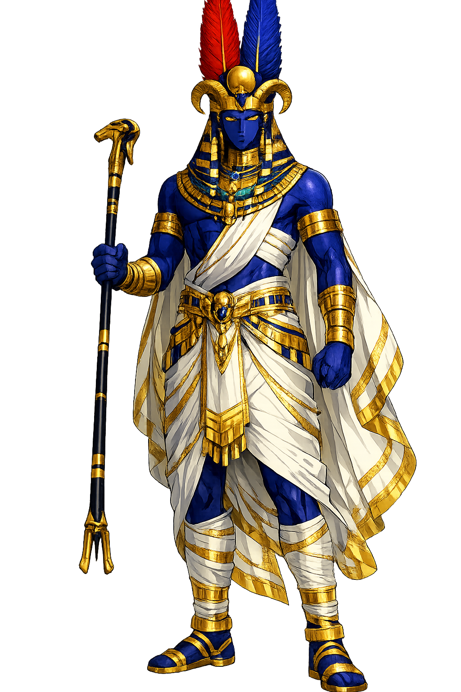

The Authentic Orthography
Wind, Kingship, Thebes · Hidden One (Egyptian jmn; vocalized Ꜣmun)

Unicode restoration and ASCII comparison
𓇋𓏠𓈖
The name in its original Egyptian form. Ꜣmun (𓇋𓏠𓈖) is attested in the source tradition — “Hidden One (Egyptian jmn; vocalized Ꜣmun)”. Its original diacritics and script distinctions carry the full phonetic and orthographic weight of the source tradition.
amun
Reduced to plain amun, the name loses everything that made it specific: original diacritics and script distinctions. What remains is an ASCII string that machines can parse but that no longer speaks with its original voice.
Ꜣmun
The Unicode restoration recovers what ASCII flattened. Ꜣmun restores original diacritics and script distinctions, returning the name to its original written dignity. The domain encodes to Punycode, but the browser displays the truth.
Ꜣmun.com → xn--mun-lk3l.com
The non-ASCII characters in Ꜣmun are encoded while the ASCII remains visible. To the DNS, it is Punycode. To humanity, it is Ꜣmun.
How Ꜣmun travels from ancient script to the modern URL
Egyptian jmn; the original vocalisation is unknown. The name means “the hidden one", reflecting Amun’s character as an invisible, transcendent deity.
How Ꜣmun was spoken
Wind, Kingship, and the Invisible Power
Ꜣmun begins as a local Theban wind god and ends as the king of the Egyptian pantheon, fused with Ra as Amun-Ra. His very name means 'Hidden One': he is the power that cannot be seen, the breath behind the storm, the unseen source of royal and cosmic authority. Where solar gods blaze in the sky, Amun moves in the air, the temple shadows, and the oracle's whisper.
Amun's wind aspect links him to invisible force, royal fortune, and the breath that animates the cosmos.
The great temple complex at Karnak was his principal seat; each pharaoh added to its forest of pylons and obelisks.
Fused with the sun god, Amun becomes the hidden power within the visible disk, worshipped across Egypt.
His desert oracle at Siwa was consulted by Greek colonists and famously by Alexander the Great.
Stories of Ꜣmun
Amun's rise from provincial wind god to universal king is one of the great success stories of Egyptian religion. By the Middle Kingdom he is national; by the New Kingdom he is Amun-Ra, hidden lord of the cosmos; by the Late Period his oracles and priesthoods rival pharaonic power. His myths revolve around concealment, revelation, and the transmission of authority.
Amun began as one of several gods of the Hermopolitan Ogdoad, associated with the invisible air. When Thebes rose to political prominence in the Middle Kingdom, Amun rose with it. New Kingdom theologians proclaimed him 'King of the Gods,' the unseen power whose will was revealed through oracles, processions, and the priesthood of Karnak. His hiddenness was not absence but the mark of a supreme being too vast to be fully known.
In Theban versions of the widespread 'Distant Goddess' myth, the angry solar eye — often identified with Mut or Tefnut — wanders far from Egypt in the form of a lioness or cat. Amun (or another male deity) persuades her to return, restoring cosmic order. The myth was dramatized in annual festivals that brought the gods' images out of Karnak in procession.
When Alexander the Great visited the oracle of Amun at Siwa in 331 BCE, the priests hailed him as son of Amun. The episode sealed Alexander's claim to legitimate Egyptian kingship and linked Greek, Egyptian, and Near Eastern royal ideologies. It also made Amun-Zeus Ammon a figure of Mediterranean fame for centuries.
Amun is the god of what moves without being seen: the wind, the breath, the hidden cause behind visible events. In an age obsessed with surfaces, he asks us to attend to the invisible currents — economic, ecological, psychological — that shape our lives. To invoke Amun is to acknowledge that the most powerful forces are often the least visible, and that wisdom lies in learning to read what cannot be directly observed.
Enter Extended Lore